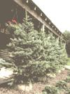

MOTHER'S CHRISTMAS SPECIAL
This Christmas, enjoy your tree all year round!
IT ALWAYS SEEMS LIKE SUCH A SHAME TO throw out the lovely tree that meant so much to you during the holidays. But sometime after the Super Bowl and before Valentine's Day, your once spruced-up spruce inevitably must hit the curb before the last dried-up needle hits the floor.
Think there has to be a better way? There is: Purchase a living tree ... one with its roots intact in a burlap-wrapped ball of earth. Live evergreens not only remain beautiful throughout the season (unlike cut trees, which tend to dry out rapidly), but can be replanted once they've decked your halls. In addition to having a permanent, living reminder of Christmas past, you also get the benefit of improving the value of your property, establishing a new windbreak, or providing some welcome summer shade.
Transplanting success starts at the tree lot or nursery. Most tree experts agree that fir, spruce, and pine are all good candidates for post-holiday planting. Actually, almost any variety of tree-as long as its roots are wrapped in burlap-will adapt well to transplantation ... except hemlocks.
When choosing the actual tree, look for a healthy specimen with long, full branches and a large earth ball that's not frozen. We priced some nice five-foot trees from $30 to $70 (almost $20 more on average than comparable chopped cousins, but remember that you're getting something that will last a lifetime instead of just a few weeks).
Once you get your Christmas conifer home, you'll need to "break in" your tree by leaving it in a cool, slightly damp area (such as a garage or basement) for three or four days to lessen the shock of the transition from outdoors to in. During this interim, keep the root ball covered with straw, peat moss, or an old blanket.
When you're ready to carry the tree indoors, stand it in a large tub and pack sawdust, peat moss, or even shredded newspapers around the trunk to help hold it upright. An old cloth draped over the earth ball will help the roots retain moisture. To hide the tub and its contents, simply drape a decorative tree skirt over and around it.
Most horticulturists advise that you keep your living decoration in the house for only a week to 10 days-certainly no more than two weeks. Try to place it near a window and away from warm, dry air escaping from heating vents, fireplaces, and woodstoves.
Most of the plant's roots will be close to the top of the earth ball, so be sure to keep that area moist at all times: An average-size tree will require about one quart of water a day while it's indoors. Decorate the same as you would a cut tree but go easy on the electric lights, as heat from even the tiniest bulbs will tend to dry out a conifer's needles.
When you're ready to transplant your tree, it's a good idea to give it another transitional stay in the garage (find a site far enough from buildings and other trees to allow for future growth).
To transplant, dig a hole about one and a half times larger than the root mass and gently lower the sapling into place. (If your area has early freezes, you may have to dig the hole before the holidays, store the dirt indoors, and fill the hole with straw until planting time.) Next, remove the nails from the burlap bag and loosen the cloth to give the tree's roots a chance to breathe. Then, fill the hole with a portion of the dirt that was removed, and use the remaining soil to shape a small mound around the edge of the hole. Then dig a V- to 2"-wide ditch just inside that dike. Finally, mulch the tree with straw, and give your tree its first watering by filling the "moat" three times.
If your Christmas tree is carefully planted and cared for, you can expect it to begin an annual tradition that will continue to beautify your land for years to come and serve as a happy reminder of past holiday celebrations.
IF YOU DIDN'T BUY A LIVE TREE THIS year, there are still a few things you can do other than just throw your cut tree away.
• Take your treeand any extras you might have collected from the neighborsand pile in the comers of fields to make a home for quail, pheasants, and rabbits.
•Tie a couple of rocks to each evergreen and drop it into a pond (if your pond is frozen over, drag the tree out to a strategic spot on the ice and leave it for the first thaw). Small fish appreciate a little brush on the bottom of a farm pond; it gives them a chance to hide from the bigger fish-and maybe grow into big fish themselves!
|
 |
|
|